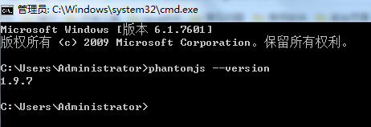

输出为其他格式文件
预备安装
phantomjs
进入https://bitbucket.org/ariya/phantomjs/downloads/下载phantomjs： 将下载的压缩包解压，并将解压后的bin目录添加到环境变量。
安装完成后，查看版本：phantomjs --version 正常返回 
calibre
进入https://calibre-ebook.com/download下载适合自己电脑的calibre: 直接安装下载后的软件，安装步骤参考：https://jingyan.baidu.com/album/6079ad0eb87aa328fe86db6a.html?picindex=1，直接点击下一步即可，邮件什么的不用填写。并在将安装目录添加到环境变量中。Mac需要增加软连接。 默认位置：C:\Program Files (x86)\Calibre2 查看版本：calibre -v
执行以下文件就会生成pdf文件在目录下
gitbook pdf # 默认目录
gitbook pdf ./mybook # 指定目录
EPUB
执行以下文件就会生成EPUB文件在目录下
gitbook epub # 默认目录
gitbook epub ./mybook # 指定目录
Mobi
执行以下文件就会生成Mobi文件在目录下
gitbook mobi # 默认目录
gitbook mobi ./mybook # 指定目录